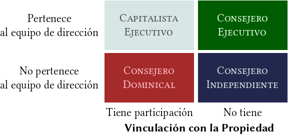

Este artículo es un resumen de [BIL2013] , capítulo 14, epígrafe V
La propiedad
La estructura de la propiedad de una empresa se define a través de su distribución accionarial, de su grado de concentración y del tipo de representación que los accionistas tienen a su alcance.
Distribución accionarial
La distribución se refiere a la tipología de propietarios de la empresa. Las tipologías más relevantes son:
- Accionistas individuales / colectivos (institucionales)
- Accionistas mayoritarios / minoritarios
El tipo concreto de accionista determina los intereses del mismo, y por tanto, en el caso de que tenga poder, determinan el tupo de gestión que llevará a cabo en su empresas, y si no tiene poder, determina los posibles conflictos de intereses.
Grado de concentración
En principio, la dispersión limita la capacidad de los accionistas para ejercer sus derechos, fundamentalmente debido a:
- Los directivos están interesados en incrementar el número de accionistas porque se reduce el poder individual de los mismos, y por tanto da mayor libertad a la dirección
- El aumento de los accionistas reduce el incentivo y la capacidad de cada accionistas de controlar eficientemente la gestión de su empresa.
Por el contrario, la concentración supone el control por núcleos estables involucrados. No obstante, este mecanismo falla porque la presencia de grupos dominantes es a menudo el resultado de objetivos a corto plazo más que de estrategias de generación de valor a largo plazo.
Tipo de representación
El consentimiento que el accionistas otorga a los directivos es reflejo del acceso al poder que tiene éstos. Este consentimiento se vuelve explícito en la Junta General de Accionistas. Este consentimiento puede ser:
- Nominal
El accionista no vota, en su lugar lo hace, bien los directivos, bien un intermediario financiero.
- Contaminado
Cuando el intermediario financiero representante del accionista vota a favor de algo cuando debería oponerse.
- Coactivo
Cuando la dirección vincula una decisión atractiva para el accionista a un acontecimiento contrario a los intereses del mismo.
- Pobre
Cuando la dirección limita conscientemente las alternativas de elección al alcance del accionista.
El consejo de administración
Es importante el estudio de la variables relevantes del consejo de administración, sus funciones y de la estructura que adopta.
Variables relevantes
- El tamaño del consejo
- El hecho de que el presidente del consejo sea o no ejecutivo
- La independencia de los miembros del consejo
- La elección, el nombramiento y la remuneración de los consejeros.
- La existencia o no de determinadas comisiones especializadas dentro del consejo
- Todas las variables relativas al comportamiento individual de cada miembro del consejo, desde una perspectiva psicológica conductista.
El valor que se dé a cada una de estas variables determinará la eficiencia con la que los consejeros llevarán a cabo sus funciones de cara a respetar los objetivos de la empresa y de resolver los conflictos de intereses.
Funciones del consejo
Las funciones principales del consejo de administración, agrupadas en sus tres roles esenciales:
- Funciones de estrategia
- Aprobar y revisar la filosofía y la estrategia de la empresa
- Aprobar y revisar la asignación de capital en la empresa
- Aprobar y revisar los objetivos corporativos a largo plazo
- Funciones de control
- Aprobar el desempeño del consejo de administración
- Seleccionar, evaluar, fijar la remuneración y sustituir a los altos directivos de la empresa
- Revisar los resultados y compararlos con los objetivos, la filosofía, la estrategia y con la competencia.
- Funciones de servicio
- Asesorar y aconsejar
- Tutelar y colaborar en las tareas de dirección estratégica
Estructura del consejo
La estructura básica de los consejos está ligada a la cultura empresarial de cada país, y está apoyada y definida por la legislación de cada país.
- El consejo de administración dual
- Coexisten dos consejos, el ejecutivo y el de supervisión. El país que mejor lo representa es Alemania.
- El consejo de administración único
- Prevalece en EEUU, Japón y muchos países europeos, entre ellos España.
El cuadro de mando integral puede ser una buena herramienta de medición para controlar que los directivos cumplan con sus obligaciones.
Referencias
| [BIL2013] | Paloma Bilbao, et al (2013), Política de Empresa y Estrategia, 3ªEd., Editorial Universitas |
Comments
comments powered by Disqus